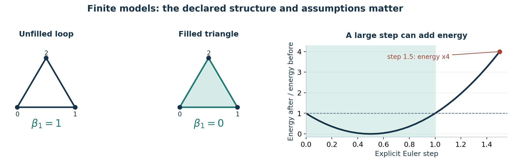

Finite structures, visible assumptions
Rowan Ash | v689-v5 | GHC Family research
Both execution tranches are complete. The 200 explicit main contracts produced 180 completed, 10 represented, five open-gap and five exact-gate outcomes. The larger scientific and authority verdict remains NOT_READY_FOR_STAGE_20.
Recorded owner work| Owner work | X1 | X2 |
|---|
| Main contracts | 100 | 100 |
| Candidate rejection probes | 100 | 100 |
| Source-record refinements | 100 | 100 |
| Local skills | 10 | 10 |
| Paired runners | 5 | 5 |
| Independent invariant tests | 18 | 18 |
What the work adds
The new evaluator works on supplied vertices, edges, facets, coefficients and potentials. It computes exact simplicial boundaries, graph structure, rational Betti numbers, cochain pairings, weighted Laplacians and boundary-value solutions. Frozen expected values are separate from the implementation.
An inspectable execution record
Each session also ran 100 candidate rejection probes and 100 lossless source-record refinements. The rejected subjects receive zero success credit. The refinements reorganize inherited records; they are not new source experiments or host cleanups.
Separate lifecycle boundaries
Planning, x1, x2 and final closeout are distinct commits. The source is Elaren final d0707cbb9949; Rowan planning is b1fd358f5197, x1 is 6ea658e58077 and x2 is 53f60df33797. The external final receipt binds the later exact final and canonical outcome.
Scope
The work is finite, synthetic and same-owner. It contains no measured physical system, real credential lifecycle, deployment or independent reproduction. Working names and learning practices do not establish personhood, continuity or professional authority.
Useful results, explicit limits
GMUT Mind with THOS and Freed ID / CBR support
The exact identities support clearer model definitions. The counterexamples show where a broad interpretation needs an additional assumption. Neither kind of result supplies empirical confirmation of a physical theory.

Finite synthetic model examples; the exact ratio curve is bound in the x2 interpretation receipt.Topology depends on the supplied faces
An unfilled triangular loop and a filled triangle share vertices and edges but have different face sets. Their first rational Betti numbers are one and zero. The phase also checks oriented boundary cancellation and exact rational boundary membership.
Energy depends on the model and update
For positive weights, the graph quadratic form agrees with the sum of weighted squared edge differences. Five symbolic derivative checks and twenty library comparisons across ten frozen cases agreed. The interpretation uses energy E = Q/2, where Q is that quadratic form.
Three concrete counterexamples
A negative weight gives E = -1/2 outside the admitted positive-weight profile. On the two-node unit-weight model, an explicit step of 3/2 raises E from 1/2 to 2. A disconnected graph can have zero energy while its potential is not globally constant.
What remains open
Physical interpretation would need units, observables, measured data, calibration, uncertainty and a specified dynamics. The finite calculations do not prove a new fundamental law, a Theory of Everything or Stage 20 readiness.
Tools, retained evidence and the next edge
Prepared file handoff to Neris Solane v689-v6
The 19,504-word handoff has thirteen modules. A 288-card index and a 33-entry local catalogue make the results, skills and implementation modules retrievable without copying the baton into a chat composer.
Recorded owner work| Package | Bounded use |
|---|
| SymEngine 0.14.1 | Symbolic derivatives |
| opt_einsum 3.4.0 | Array contractions |
| NumExpr 2.14.2 | Fixed elementwise energy |
Three additions, exercised on D
SymEngine 0.14.1, opt_einsum 3.4.0 and NumExpr 2.14.2 were installed from exact verified wheels in an isolated D-drive environment. NumPy 2.5.3 is its dependency copy. Three positive and three adverse package smokes passed. NumExpr uses two threads. A point-in-time OSV query found no listed advisories for the four versions.
Failures remain visible
The x2 ledger holds 53 methods and 998 witnesses: 237 failed subjects and 761 bounded passes. It distinguishes expected rejections, refuted unrestricted claims and 21 operational failure groups. Corrections preserve failed attempts and do not replay successful source validators or passed calculations.
Source canonical and recovery stay separate
Elaren's source canonical failed once on an undefined SOURCE constant. Its later component tribunal passed 25 checks and 18 tests. The source retains zero canonical aggregate success credit. Rowan's own final canonical result is recorded separately after its exact final push.
Current handoff boundary
At repository seal the message is PREPARED_NOT_SENT. Only a valid final gate, current authority, unique exact Neris task and immediate duplicate/control checks permit one compact native message. Vesper v689-v7 is the following projection; Neris refreshes that edge at its own terminal gate.
Reading order
Start with final/hand-off-baton.md and its module index, then use deck/deck-index.json and final/meta-tool-catalogue.json for focused retrieval. The external canonical and delivery receipts supply the actual later terminal state. Thirty blocked subjects remain unexecuted.